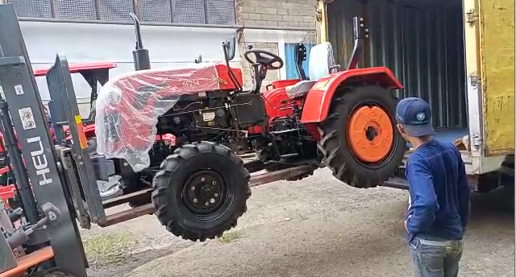
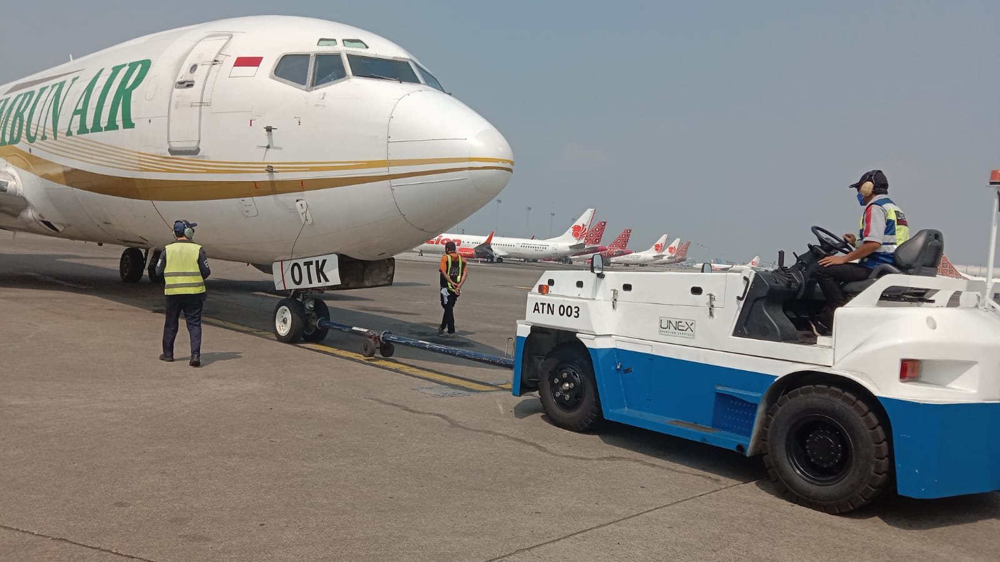
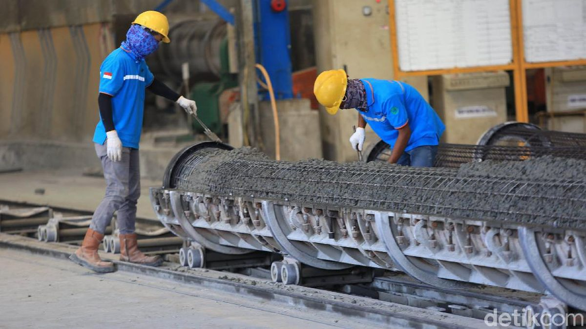

Project Cargo
Pengiriman via LCT
Jambi - Kalimantan
Mobilisasi alat berat excavator menggunakan transportasi laut khusus.

Mining
Unit HD 465 & Komatsu 1500
Pamapersada Site
Pengiriman unit truk tambang raksasa dengan pengawalan khusus.

Konstruksi
Material Tiang Pancang
Kumai, Kalteng
Distribusi material konstruksi beton untuk proyek PT. Nipindo Primatama.

Agriculture
Pengiriman Traktor
Tujuan Pekanbaru
Kerjasama dengan PT. Bina Pertiwi untuk distribusi alat pertanian.

Aviation
Pushback Tractor Bandara
Timika & Sintang
Proyek Kementerian Perhubungan untuk operasional bandara.

Material
Besi Beton & Fabrikasi
Magelang
Pengiriman material konstruksi untuk Proyek Sido Agung (PT. Dasatria Utama).